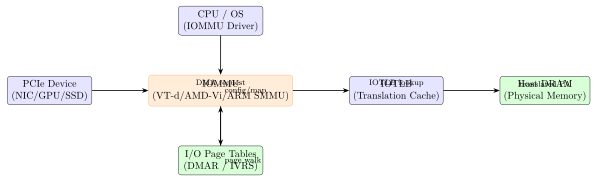
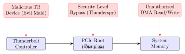

Chapter 11: IOMMU and DMA Protection¶
Note: Direct Memory Access (DMA) is one of the most powerful and dangerous hardware capabilities in modern systems. A peripheral device granted DMA access can read and write any physical memory address, bypassing the CPU and operating system entirely. The IOMMU (Input-Output Memory Management Unit) is the primary hardware mechanism for constraining DMA access. This chapter covers DMA attack methodologies including Thunderspy, PCILeech, and BadUSB-class attacks; Intel VT-d, AMD-Vi, and ARM SMMU v3.2 architectures; SPDM/IDE for PCIe device authentication; and Thunderbolt security levels.
11.1 DMA Attack Fundamentals¶
11.1.1 DMA Attack Concept¶
Direct Memory Access allows hardware peripherals to transfer data to and from system memory without CPU involvement. This is essential for high-throughput devices (NVMe SSDs, GPUs, 10GbE NICs) but creates a fundamental security challenge: a malicious peripheral can DMA to any physical address, including kernel memory, page tables, and cryptographic key material.
The attack model: an adversary introduces a malicious PCIe device (via Thunderbolt, ExpressCard, or OCP slot) and uses DMA to: (1) read RAM for credentials, BitLocker VMK, and private keys; (2) write RAM to inject malicious code, modify page tables, or patch security checks.
11.1.2 PCILeech: Hardware DMA Attack Platform¶
PCILeech (github.com/ufrisk/pcileech) is an open-source framework for DMA-based memory access. It supports multiple hardware platforms:
-
Screamer M2 (Xilinx Artix-7): M.2 form factor PCIe DMA board (LambdaConcept). Artix-7 XC7A35T, PCIe Gen 1 x1, direct memory access at \(\approx\)700 MB/s read rate.
-
USB3380 (PLX Technology): USB-to-PCIe bridge chip, EnBW AC701 or dedicated USB3380-AB evaluation board. Slower (USB 3.0 limited) but lower cost.
-
Xilinx AC701 (xcku040): Full-featured PCIe DMA platform, PCIe Gen 2 x4, 35K LUT FPGA fabric for custom attack logic.
# PCILeech: DMA memory read from target system
# Install PCILeech and appropriate FPGA firmware
pcileech.exe probe # Detect device
pcileech.exe dump -out memory.raw # Dump all RAM
pcileech.exe wx64 -cmd "whoami" # Execute commands (Windows)
pcileech.exe pt # Page table analysis
pcileech.exe lx64 -cmd "id && uname -a" # Execute on Linux
# Python: Direct memory read via PCILeech FPGA DMA
import memprocfs
vmm = memprocfs.Vmm(["", "-device", "fpga"])
# Read 4KB at physical address 0x1000
data = vmm.memory.read(0x1000, 0x1000)
print(f"Physical 0x1000: {data[:16].hex()}")
# Search for Windows LSASS credentials in memory
processes = vmm.process_list()
lsass = [p for p in processes if p.name == "lsass.exe"]
11.1.3 Thunderspy Vulnerabilities (Bjorn Ruytenberg, 2020)¶
Thunderspy (thunderspy.io) disclosed seven vulnerabilities in the Intel Thunderbolt protocol:
-
Inadequate firmware verification: Thunderbolt firmware can be downgraded to a vulnerable version disabling security checks.
-
Weak device authentication: Pre-Thunderbolt 4 devices can be spoofed.
-
Use of unauthenticated device metadata: Thunderbolt host trusts metadata claimed by the device without cryptographic verification.
-
Downgrade attack using backwards compatibility: Security Level can be downgraded from SL3 (Secure Connect) to SL1 (allow all devices).
-
Use of unauthenticated controller configurations: Thunderbolt controller firmware is not authenticated before execution.
-
SPI flash interface deficiencies: Direct flash programming bypasses secure boot on Thunderbolt controllers (e.g., Titan Ridge).
-
No Thunderbolt security on Boot Camp: macOS Boot Camp disables Thunderbolt security when booting Windows, exposing the attack surface.
The Evil Maid attack using Thunderspy: (1) briefly access the locked laptop, (2) open the case, (3) attach a SPI programmer to the Thunderbolt controller flash, (4) reprogram firmware to disable security, (5) close the case. On next boot, any Thunderbolt device has PCIe DMA access.


11.2 Intel VT-d Architecture¶
Intel VT-d (Virtualization Technology for Directed I/O) is the Intel IOMMU implementation. Described in the Intel VT-d Architecture Specification rev 3.4 (2022). Exposed to firmware via the DMAR (DMA Remapping Reporting) ACPI table.
11.2.1 DMAR ACPI Table Structure¶
The DMAR table (ACPI signature: DMAR, 4-byte) describes the IOMMU topology:
-
DRHD: DMA Remapping Hardware Unit Definition – MMIO base of each VT-d unit
-
RMRR: Reserved Memory Region Reporter – regions exempt from remapping (e.g., BIOS USB)
-
ATSR: ATS Capability Reporting – PCIe Address Translation Services support
-
SATC: SoC Integrated ATS Cache – platform ATS topology for SoC-integrated devices
11.2.2 I/O Page Table Format¶
VT-d I/O Page Tables (IOPT) use identical structure to x86 paging:
-
4-level paging: 512 GB / 1 GB / 2 MB / 4 KB granularity, 64-bit IOPTEs
-
5-level paging (VT-d 3.0+): 128 PB address space
-
Root Entry (RE): per-bus routing to Context Table
-
Context Entry (CE): per-function, points to IOPT root, specifies address width and domain
-
IOMMU domain: isolation unit – all devices in same domain share address space
11.2.3 Interrupt Remapping¶
VT-d Interrupt Remapping (IR) validates MSI/MSI-X interrupt request messages before delivery, preventing malicious DMA devices from injecting interrupts to arbitrary vectors. Posted Interrupt Descriptors (PID) accelerate virtual interrupt injection in virtualized environments.
11.2.4 Linux VT-d Configuration¶
# Kernel command line: enable Intel VT-d strict mode
intel_iommu=on iommu=strict
# iommu=pt -- passthrough (IOMMU off for trusted devices)
# List IOMMU groups
for g in /sys/kernel/iommu_groups/*/; do
echo "Group $(basename $g):"
ls "$g/devices/" | while read d; do
echo " $(lspci -s $d 2>/dev/null)"
done
done
# Bind device to vfio-pci for VM passthrough
echo "0000:01:00.0" > /sys/bus/pci/devices/0000:01:00.0/driver/unbind
echo "1234 5678" > /sys/bus/pci/drivers/vfio-pci/new_id
# Python: VFIO device API
import os, fcntl
VFIO_GET_API_VERSION = 0x3B64
vfio_fd = os.open("/dev/vfio/vfio", os.O_RDWR)
api_ver = fcntl.ioctl(vfio_fd, VFIO_GET_API_VERSION, 0)
print(f"VFIO API version: {api_ver}")
11.3 AMD IOMMU (AMD-Vi)¶
AMD IOMMU (AMD-Vi) is described in the AMD IOMMU Architecture Specification rev 3.05. Exposed to firmware via the IVRS (I/O Virtualization Reporting Structure) ACPI table.
-
Device Table: 256K entries (one per PCIe requester ID). Each DTE specifies page table pointer, IRQ remap table, PASID mode.
-
Command Ring: 4KB circular buffer for IOMMU commands (INVALIDATE_IOMMU_PAGES, etc.)
-
Event Ring: 4KB circular buffer for IOMMU events (PAGE_TAB_HARDWARE_ERROR, etc.)
-
PASID Support: Per-process address space isolation for SRIOV and SVA
-
SNP Support: AMD-Vi extended for SEV-SNP guest memory protection
# Enable AMD IOMMU in Linux
amd_iommu=on iommu=strict
# C: Linux kernel IOMMU API usage
#include <linux/iommu.h>
struct iommu_domain *domain = iommu_domain_alloc(&pci_bus_type);
/* Map 4KB: IOVA 0x80000000 -> PA phys_addr, read+write */
int ret = iommu_map(domain, 0x80000000ULL, phys_addr,
SZ_4K, IOMMU_READ | IOMMU_WRITE, GFP_KERNEL);
iommu_attach_device(domain, &pdev->dev);
/* Unmap and free when done */
iommu_unmap(domain, 0x80000000ULL, SZ_4K);
iommu_detach_device(domain, &pdev->dev);
iommu_domain_free(domain);
AMD IOMMU in EPYC 7003 (Zen 3, 7nm): integrated IOMMU with PCIe Gen 4 support, supports 48-bit VA (4-level) and 57-bit VA (5-level) page tables, PASID (20-bit), SVA (Shared Virtual Addressing), and SNP (Secure Nested Paging) for SEV-SNP.
11.4 ARM SMMU v3.2¶
ARM System Memory Management Unit v3.2 (ARM IHI0070F) is the ARM architecture IOMMU standard. Used in Ampere Altra (80-core ARM server), Apple M1/M2 (as DART), Qualcomm Snapdragon, and numerous embedded SoCs.
11.4.1 ARM SMMU v3.2 Architecture¶
-
Stream ID: Device identifier (analogous to PCIe RID). Up to 32-bit stream ID space.
-
Stream Table: 2-level table indexed by Stream ID. Each STE specifies translation mode and S1/S2 config descriptors.
-
Context Descriptor (CD) Table: Indexed by SSID (sub-stream ID = PASID). Each CD points to a page table base.
-
S1 Translation: Stage 1 (IOVA to IPA) – device-managed address space.
-
S2 Translation: Stage 2 (IPA to PA) – hypervisor-managed protection for guests.
-
ATS (Address Translation Services): PCIe device requests translation, receives PA, caches in device-side IOTLB.
-
PRI (Page Request Interface): Device requests mapping on demand (similar to x86 PCI PRI).
-
Command Queue: Ring buffer for TLBI (TLB invalidation), CMD_SYNC, etc.
# ARM SMMU in Linux: enable via kernel command line
# arm-smmu.disable_bypass=1 -- reject unmatched transactions
# Check SMMU in Linux
dmesg | grep -i smmu
# arm-smmu-v3: probing hardware ...
# arm-smmu-v3 arm-smmu-v3.0: SFR: 0x0 SFR2: 0x0
11.5 Thunderbolt Security Levels and Mitigations¶
Intel Thunderbolt defines four security levels:
-
SL0 (None): No security – all Thunderbolt devices allowed. Legacy mode.
-
SL1 (User): User must authorize each new device on first connection. Device UUID stored in firmware authorized device list.
-
SL2 (Secure Connect): Cryptographic device authentication using challenge-response. Device must present a valid certificate signed by Intel.
-
SL3 (DisplayPort Only): Only DisplayPort tunneling allowed. PCIe tunneling disabled. No DMA access possible from external Thunderbolt devices.
Thunderbolt 4 (Intel Ice Lake, Tiger Lake, Alder Lake) mandates SL3 support and enforces Kernel DMA Protection (DMA guard) that blocks external Thunderbolt PCIe DMA until the OS has initialized and the IOMMU is active.
11.5.1 SPDM and IDE for PCIe Device Authentication¶
DMTF DSP0274 SPDM (Security Protocol and Data Model) version 1.3 defines a protocol for PCIe device authentication, measurement, and key exchange over PCIe DOE (Data Object Exchange) mailboxes and MCTP (Management Component Transport Protocol):
-
GET_DIGESTS: Request device certificate chain digest
-
GET_CERTIFICATE: Retrieve full X.509 certificate chain
-
CHALLENGE: Challenge-response for device identity authentication
-
GET_MEASUREMENTS: Request firmware/hardware measurements
-
KEY_EXCHANGE: Establish session keys for IDE (Integrity and Data Encryption)
PCIe 6.0 IDE (Integrity and Data Encryption) provides link-layer encryption between root complex and endpoint using AES-256-GCM, protecting against DMA-over-PCIe attacks on physical bus sniffers and interposers.
11.6 Kernel DMA Protection and Windows HVCI¶
Windows Kernel DMA Protection (KDP): enabled via UEFI PrebootDMAProtection flag in DMAR table. Blocks external PCIe/Thunderbolt DMA during pre-boot and early boot phases until the OS IOMMU driver initializes. BitLocker Volume Master Key (VMK) cannot be extracted via DMA until after the OS IOMMU is active.
Windows HVCI (Hypervisor-Protected Code Integrity): uses VT-d/AMD-Vi to enforce code signing at the hypervisor level. All kernel code must be signed; unsigned drivers cannot inject malicious code even via DMA (the IOMMU blocks direct write to kernel code pages).
Linux swiotlb (Software I/O Translation Lookaside Buffer): software bounce buffers for devices lacking IOMMU support. Data is copied through a safe DMA zone, preventing DMA attacks from devices that claim addresses outside their allocation.
# Check Linux DMA protection status
cat /sys/kernel/iommu_groups/*/type
# DMA -- standard IOMMU-mapped DMA
# DMA-FQ -- batched IOMMU invalidation
# Check swiotlb allocation
dmesg | grep swiotlb
# software IO TLB: mapped [mem 0xXX-0xYY] (64MB)
# Apple DART (Device Address Resolution Table) -- M1/M2 IOMMU
# Similar to ARM SMMU, SoC-integrated, manages USB4/Thunderbolt DMA
# Linux driver: drivers/iommu/apple-dart.c
11.7 FPGA DMA Controller and PCILeech Firmware¶
PCILeech uses FPGA-based DMA controllers to issue PCIe TLP (Transaction Layer Packets) directly on the PCIe bus. The Screamer M2 (LambdaConcept) uses Xilinx Artix-7 XC7A35T:
| Component | LUTs | FFs | BRAMs | MHz | Notes |
|---|---|---|---|---|---|
| PCIe Gen1 x1 IP Core | 3200 | 2400 | 4 | 125 | Xilinx PCIe IP |
| DMA Engine (read) | 800 | 600 | 2 | 125 | TLP generator |
| DMA Engine (write) | 700 | 550 | 2 | 125 | TLP responder |
| FT601 USB3 Interface | 400 | 320 | 0 | 100 | FTDI FT601 IF |
| Control Logic | 300 | 250 | 0 | 125 | BRAM addr ctrl |
| Total | 5400 | 4120 | 8 | 125 | 15% of XC7A35T |
ASIC implementation – Intel VT-d engine in Intel Xeon (Skylake-SP, 22nm):
-
DMA remapping throughput: \(\approx\)40 GB/s (PCIe Gen 3 x16 maximum)
-
IOTLB size: 1024 entries, 8-way set-associative
-
Page walk latency: 4–8 DRAM accesses for 4-level miss (cached by IOTLB)
-
IOMMU overhead: \(\approx\)2–5% throughput penalty for streaming DMA
-
Area: \(\approx\)2.1 mm\(^2\) VT-d engine (estimated, integrated in PCH)
11.8 Solutions Comparison¶
| Solution | Vendor | Platform | Standard | Notes |
|---|---|---|---|---|
| Intel VT-d | Intel | Xeon, Core | VT-d 3.4 Spec | DMAR ACPI table |
| AMD-Vi / AMD IOMMU | AMD | EPYC, Ryzen | AMD IOMMU 3.05 | IVRS ACPI table |
| ARM SMMU v3.2 | ARM | Cortex-A, Neoverse | IHI0070F | Ampere, Qualcomm |
| Apple DART | Apple | M1/M2/M3 SoC | Internal | USB4 / Thunderbolt |
| Qualcomm IOMMU | Qualcomm | Snapdragon | Internal | SMMU-based |
| Linux VFIO/IOMMU | Linux/OSS | All above | POSIX ioctls | github.com/vfio |
| Windows DMA Guard | Microsoft | Intel/AMD | Kernel DMA Prot. | HVCI + VT-d |
| macOS TB Security | Apple | Thunderbolt | SL2/SL3 | Challenge-response |
| SPDM / IDE | DMTF | PCIe 6.0 | DSP0274 / PCIe 6.0 | Link encryption |
| PCILeech (attack) | OSS | Artix-7 FPGA | N/A | DMA attack tool |
| Thunderclap | Research | Various | N/A | IOMMU bypass research |
11.9 Solved Problems¶
Solved Problem: IOMMU Page Table Walk for DMA Address Translation
A PCIe NVMe SSD controller issues a DMA read at IOVA (I/O Virtual Address) 0x0000_4020_0000. The OS has programmed a 4-level VT-d IOPT with page table base at physical address 0x0000_0001_4000. Walk through the complete translation to the physical address. Assume 4 KB pages, 48-bit IOVA, 64-bit IOPTE entries.
Solution:
Step 1: IOVA Decomposition (48-bit, 4-level)
IOVA = 0x0000_4020_0000 = 0b 0000_0000_0000_0000 0100 0000 0010 0000 0000 0000 0000 0000
-
Bits [47:39] = PML4 index: \((0x4020\_0000 >> 39)\,\&\,0x1FF = 0\)
-
Bits [38:30] = PDPT index: \((0x4020\_0000 >> 30)\,\&\,0x1FF = 1\)
-
Bits [29:21] = PD index: \((0x4020\_0000 >> 21)\,\&\,0x1FF = 1\)
-
Bits [20:12] = PT index: \((0x4020\_0000 >> 12)\,\&\,0x1FF = 0\)
-
Bits [11:0] = Page offset: 0x000
Step 2: Level 4 (PML4) Lookup
PML4 base = 0x0000_0001_4000. PML4 index = 0. PML4E address = 0x0000_0001_4000 + 0 \(\times\) 8 = 0x0000_0001_4000. PML4E value (example) = 0x0000_0001_5003 (present, read/write, PDPT base = 0x1_5000).
Step 3: Level 3 (PDPT) Lookup
PDPT base = 0x0000_0001_5000. PDPT index = 1. PDPTE address = 0x0000_0001_5000 + 1 \(\times\) 8 = 0x0000_0001_5008. PDPTE value (example) = 0x0000_0001_6003 (present, PD base = 0x1_6000).
Step 4: Level 2 (PD) Lookup
PD base = 0x0000_0001_6000. PD index = 1. PDE address = 0x0000_0001_6000 + 1 \(\times\) 8 = 0x0000_0001_6008. PDE value (example) = 0x0000_0001_7003 (present, PT base = 0x1_7000).
Step 5: Level 1 (PT) Lookup
PT base = 0x0000_0001_7000. PT index = 0. PTE address = 0x0000_0001_7000 + 0 \(\times\) 8 = 0x0000_0001_7000. PTE value (example) = 0x0000_0002_0003 (present, read/write, page frame = 0x2_0000).
Step 6: Physical Address Assembly
PA = page_frame | page_offset = 0x0000_0002_0000 | 0x000 = 0x0000_0002_0000.
Conclusion: IOVA 0x0040_2000_0000 translates to PA 0x0000_0002_0000 via 4 DRAM accesses (4-level page walk miss). The IOTLB caches this translation for subsequent requests.
Solved Problem: Thunderspy Attack Surface Analysis
A ThinkPad X1 Carbon (7th gen) running Windows 10 with BitLocker is left in sleep mode at a hotel (cold boot feasible). An adversary has 5 minutes of physical access with a Thunderspy SPI flash programmer. Analyze the attack surface and identify which Thunderspy vulnerabilities apply. Assume the device has Thunderbolt 3 at SL1 (User security level).
Solution:
Step 1: Identify Applicable Thunderspy Vulnerabilities
At SL1, the user must authorize devices. Applicable vulnerabilities:
-
Vuln 2 (Inadequate firmware verification): Titan Ridge controller firmware can be downgraded
-
Vuln 6 (SPI flash interface deficiency): Direct SPI programming bypasses secure boot
-
Vuln 4 (Downgrade attack): SL1 can be downgraded to SL0 (no security)
Step 2: Attack Sequence
-
Remove bottom panel screws (30 seconds, standard Torx T5)
-
Locate Thunderbolt 3 controller (Intel Titan Ridge, near TB3 port)
-
Attach SPI flash programmer to U69 (8-SOIC flash chip)
-
Read current firmware:
flashrom -p ft2232_spi:type=232H,divisor=4 -r fw.bin -
Modify Security Level register to 0x0 (None) and disable boot verification
-
Write modified firmware:
flashrom -p ft2232_spi -w fw_modified.bin -
Reassemble (60 seconds). Total time: \(\approx\)3 minutes.
Step 3: DMA Extraction
On next boot with sleep resume, connect Screamer M2 Thunderbolt-to-PCIe adapter. PCILeech DMA reads BitLocker VMK from RAM (held in memory during sleep). VMK can decrypt the drive.
Step 4: Mitigations Analysis
-
Insufficient: SL1, Secure Boot (TPM only), BitLocker without pre-boot auth
-
Sufficient: Thunderbolt 4 SL3, BIOS password + anti-tamper chassis detect, BitLocker with PIN (VMK not in RAM until authenticated), Hibernation (RAM cleared)
Conclusion: The attack succeeds under SL1 with physical access \(<\)5 minutes. Mitigations require Thunderbolt 4 SL3 (disabled PCIe tunneling) plus BitLocker pre-boot PIN.
Solved Problem: VFIO Device Assignment for KVM GPU Passthrough
Set up Nvidia RTX 3090 (0000:01:00.0, [10de:2204]) for KVM passthrough on AMD EPYC 7542 with AMD-Vi. Cover: kernel parameters, IOMMU group check, VFIO binding, QEMU launch.
Solution:
Step 1: Enable AMD IOMMU
GRUB_CMDLINE_LINUX_DEFAULT="amd_iommu=on iommu=pt rd.driver.pre=vfio-pci"
update-grub && reboot
Step 2: Identify IOMMU Group
lspci -nn | grep -i nvidia
ls /sys/kernel/iommu_groups/*/devices/ | grep "0000:01:00"
Step 3: Bind VFIO-PCI
echo "0000:01:00.0" > /sys/bus/pci/devices/0000:01:00.0/driver/unbind
echo "10de 2204" > /sys/bus/pci/drivers/vfio-pci/new_id
Step 4: QEMU with VFIO
qemu-system-x86_64 -enable-kvm -machine q35 -cpu host -m 32G
-device vfio-pci,host=01:00.0 -drive file=vm.qcow2,if=virtio
Conclusion: AMD-Vi maps only GPU MMIO ranges to the VM DMA space, preventing VM from accessing host memory outside its IOMMU-enforced allocation.
Solved Problem: Design DMA Protection Policy for Multi-PCIe Server
Server devices: (a) NVMe at 0000:02:00.0 (trusted, performance-critical); (b) 10GbE NIC at 0000:03:00.0 (trusted, but untrusted firmware); (c) user PCIe accelerator slot (untrusted). Design IOMMU policy protecting OS while maximizing NVMe.
Solution:
Step 1: Three-Tier DMA Protection Policy
-
NVMe: IOMMU passthrough for maximum throughput. Acceptable risk: vendor-signed firmware.
-
10GbE: Strict IOMMU isolation. NIC DMA only to OS-mapped network buffer pages.
-
User accelerator: VFIO to dedicated sandbox VM. No host kernel access.
Step 2: Linux Implementation
intel_iommu=on iommu=strict
# NVMe group passthrough override:
echo identity > /sys/kernel/iommu_groups/NVMe_GRP/type
# Bind user accelerator to VFIO:
echo "VENDID DEVID" > /sys/bus/pci/drivers/vfio-pci/new_id
Step 3: Performance Analysis
NVMe PCIe Gen 4 x4 peak: 7 GB/s. Strict IOMMU: 5% overhead = 6.65 GB/s. Passthrough: 7 GB/s. Optimize with 2 MB huge pages to reduce IOTLB misses.
Conclusion: Tiered policy: NVMe passthrough, NIC strict IOMMU, untrusted accelerator VM-isolated. IOTLB miss rate is the primary performance factor.
11.10 Recent Developments (2024–2026)¶
DMA and IOMMU security has been shaped since 2023 by new hardware interface specifications (Thunderbolt 4/USB4, PCIe 6.0), a high-profile AMD vulnerability, steady Linux kernel hardening, ARM SMMU architecture extensions, and the emergence of CXL 3.0 memory pooling with its associated trust-domain challenges.
11.10.1 Thunderbolt 4 and USB4 Security Updates (2023–2024)¶
Intel Thunderbolt 4 (specification finalised 2020, broad deployment 2023–2024) and USB4 v2.0 (40 Gbps, 2023) share an identical security architecture addressing the Thunderspy weaknesses from 2020:
| Feature | TB3 | TB4 / USB4 | Security impact |
|---|---|---|---|
| Kernel DMA Protection | Optional | Mandatory | Blocks pre-OS DMA |
| PCIe tunnelling default | On (SL1) | Off until auth | No implicit DMA |
| SPI firmware signing | No | Yes (ECDSA-P384) | Prevents FW downgrade |
| Retimer authentication | No | Yes (SPDM) | Closes interposer attack |
| USB4 Alt Mode isolation | N/A | Hard-walled | DP vs PCIe cannot mix |
Note: USB4 v2.0 silicon (Intel Barlow Ridge, 2023; AMD Phoenix, 2023) mandates kernel DMA Protection at the firmware level. The UEFI BIOS must set the PrebootDMAProtection flag in the DMAR table; if not set, Windows 11 22H2+ and Linux kernel 6.4+ will log a warning and fall back to post-initialisation IOMMU activation, leaving a pre-boot DMA window open.
11.10.2 PCIe 6.0 IDE: Integrity and Data Encryption¶
The PCI-SIG PCIe 6.0 specification (ratified January 2022, silicon arriving 2023–2024 in Intel Granite Rapids and AMD EPYC 9005 series) introduces IDE (Integrity and Data Encryption) as a normative feature:
-
Link IDE: Encrypts TLPs between two directly connected endpoints using AES-256-GCM. Keying material is established via an SPDM 1.3 session over PCIe DOE (Data Object Exchange) mailboxes.
-
Selective IDE: Encrypts TLPs from a specific root-complex port to a downstream device across PCIe switches, without encrypting switch-internal traffic. Essential for confidential computing where a GPU or NVMe must be isolated from the PCIe fabric.
-
IDE Key Refresh: Mandatory key rotation every \(2^{32}\) TLPs (approximately 68 GB at PCIe 6.0 64 GT/s line rate), preventing GCM nonce exhaustion.
-
SPDM binding: After device attestation (CHALLENGE + measurement verification), the IDE session key is derived from the SPDM handshake transcript, cryptographically binding the identity to the encrypted link.
Tip: PCIe 6.0 IDE + SPDM closes the “trusted PCIe device” problem that previously required physical port whitelisting. A compromised NVMe drive that passes its firmware hash measurement during SPDM attestation will not be granted a valid IDE session by a policy-enforcing BMC or root complex driver.
11.10.3 CVE-2023-20593: AMD Zenbleed (Zen 2 XMM Register Disclosure)¶
CVE-2023-20593 (“Zenbleed”, disclosed July 2023, Tavis Ormandy / Google Project Zero) is a microarchitectural vulnerability in AMD Zen 2 processors (EPYC Rome, Ryzen 3000/4000, Threadripper 3000) that leaks data across security domains via XMM register state:
-
Root cause: The
vzeroupperinstruction incorrectly retires a speculative micro-op that leaves YMM register state from a different execution context accessible via 128-bit XMM reads. -
Impact: Any data that transited a YMM register on the affected physical core can be read by an unprivileged process, including AES round-key material from AES-NI operations, RSA private key words from libssl, and hypervisor-context data visible to VMs sharing the core.
-
IOMMU relevance: While Zenbleed is a CPU-side vulnerability, it highlights that hardware-level memory encryption (AMD SME/SEV) does not protect data while it is being processed inside the CPU pipeline. IOMMU protects bus-facing DMA paths; register-level leakage requires microcode mitigations.
-
Mitigation: AMD microcode update AGESA 1.0.0.7b (August 2023) adds a chicken-bit (
DE_CFG[9]) that serialisesvzeroupper. Linux kernel 6.5 applies the fix automatically via/dev/cpu/*/msrif the microcode is not present.
11.10.4 Linux Kernel DMA-IOMMU Improvements (Kernels 6.1–6.8)¶
| Kernel | Feature | Security impact |
|---|---|---|
| 6.1 | iommu=forcedac default on x86 |
Forces 32-bit DMA, reduces IOTLB thrash on legacy devices |
| 6.2 | Lazy IOTLB flush batching | Reduces DMA-unmap latency; hardened flush ordering |
| 6.3 | IOMMU SVA for guest VMs | Per-process IOVA (PASID) in KVM passthrough |
| 6.4 | USB4 IOMMU auto-enable | Blocks all USB4/TB4 DMA until IOMMU domain allocated |
| 6.5 | AMD IOMMU SNP enforcement | Rejects DMA into SEV-SNP guest RMP-protected pages |
| 6.6 | CXL IOMMU root port driver | Maps CXL.mem regions into host IOMMU domain |
| 6.7 | Intel VT-d DMAR hardening | Rejects RMRR entries overlapping kernel text |
| 6.8 | iommu_group_replace API |
Live device migration between IOMMU domains (VFIO) |
11.10.5 ARM SMMU v3.2 (2023): Nested Translation and Broadcast TLB Invalidation¶
ARM released the SMMU v3.2 architecture supplement (IHI0070G, 2023) with two security-relevant additions:
Nested Translation (S1+S2 with HTTU). Prior SMMU v3 implementations required the hypervisor to manage both Stage 1 (IOVA\(\to\)IPA) and Stage 2 (IPA\(\to\)PA) translations through separate page-table walks. SMMU v3.2 adds Hardware Translation Table Update (HTTU) support for nested tables, reducing the hypervisor’s trusted computing base during DMA remapping and closing a TOCTOU window where a compromised guest could modify its S1 table between the SMMU walk and the TLB fill.
Broadcast TLB Invalidation (BTI). In multi-SMMU platforms (common on large ARM servers such as Ampere Altra Max with 128 cores), TLB invalidation broadcasts via TLBI instructions now propagate automatically to all SMMU instances sharing the same ASID namespace, eliminating a class of stale-TLB-entry bugs where a revoked DMA mapping remained valid in a secondary SMMU after unmap.
11.10.6 CXL 3.0 Security: Memory Pooling and Trust Boundaries¶
CXL (Compute Express Link) 3.0 (specification 2022, silicon 2024 in Intel Granite Rapids and Samsung CXL DRAM modules) introduces multi-level switching and memory pooling, creating new trust-domain challenges:
-
CXL.mem shared pools: Multiple hosts can map overlapping physical address windows in a CXL memory expander. Without hardware enforcement, a misconfigured host IOMMU policy could grant one tenant access to another tenant’s CXL pages.
-
CXL IDE (Integrity and Data Encryption): CXL 3.0 mandates IDE on all CXL.mem transactions, using the same PCIe 6.0 IDE AES-256-GCM session as the PCIe transport layer. Keys are negotiated per-host via SPDM 1.3 sessions.
-
CXL Trust Domains: The CXL 3.0 spec defines a Trusted Execution Environment Security Protocol (TEESP) extension that allows a confidential VM to attest a CXL memory expander and bind the IDE session key to the VM’s attestation report, ensuring only the attested VM can decrypt its CXL memory.
-
Memory interleaving hazard: CXL 3.0 supports host-managed device memory (HDM-D) interleaved across multiple expanders. A failed expander can cause partial plaintext to appear in the non-failed expander if IDE sessions are not synchronised; Linux kernel 6.6+ CXL driver enforces atomic IDE teardown on link failure.
| Feature | CXL 1.1 | CXL 2.0 | CXL 3.0 |
|---|---|---|---|
| Link encryption | No | Optional IDE | Mandatory IDE |
| Device attestation | No | SPDM 1.1 optional | SPDM 1.3 mandatory |
| Memory pooling | No | Single-level | Multi-level switch |
| TEE support | No | No | TEESP extension |
| IDE key refresh | N/A | N/A | Per \(2^{32}\) TLPs |
11.11 Exercises¶
Exercises
-
[MCQ] Which mechanism prevents a malicious Thunderbolt PCIe device from reading kernel memory? (A) BitLocker. (B) IOMMU/VT-d DMA remapping. (C) Secure Boot. (D) TPM attestation. Explain why each wrong option does not address the DMA attack vector.
-
[MCQ] Thunderbolt SL3 (DisplayPort Only) prevents DMA attacks by: (A) Encrypting all traffic with AES-128. (B) Disabling PCIe tunneling entirely. (C) Requiring a cryptographic device certificate. (D) Limiting bandwidth to display data.
-
[Short Answer] Explain the DMAR ACPI table structure used by Intel VT-d. What is a DRHD entry? What is an RMRR entry and why is it a potential security weakness?
-
[Short Answer] Describe ARM SMMU v3.2 Stream Table structure. What is a Stream ID? What is a Context Descriptor? How does S1/S2 two-stage translation work in a hypervisor?
-
[Design] Design an IOMMU policy for a cloud FPGA (Xilinx U250 PCIe x16) accessed by multiple tenant VMs. Each VM should DMA only to its own memory. Specify: (a) IOMMU domain per tenant, (b) IOVA space per domain, (c) revocation on termination.
-
[Calculation] Intel VT-d IOTLB: 1024 entries, 8-way set-associative (128 sets). NVMe workload: 512 distinct 4 KB pages in round-robin. (a) IOTLB sets indexed? (b) Hit rate for 512 pages in 128 sets? (c) Miss cost: 4 DRAM accesses at 70 ns each. Latency penalty per page at 100% miss rate?
-
[Coding] Write Python using memprocfs to: (a) list all Windows processes via DMA; (b) find lsass.exe; (c) read first 64 bytes of its VA space at 0x00100000.
-
[Short Answer] Explain the SPDM GET_MEASUREMENTS command flow for PCIe device attestation. What measurements are collected? How does IDE protect the link post-attestation?
-
[Design] Design a secure DMA buffer allocation scheme for a 10GbE NIC driver. Requirements: (a) DMA restricted to packet buffers; (b) kernel code/page tables protected; (c) NIC firmware update DMA-isolated. Use iommu_map/unmap APIs.
-
[Coding] Write a Linux kernel module that: (a) allocates IOMMU domain; (b) maps 4 KB buffer at IOVA 0x1000_0000; (c) attaches PCIe device; (d) verifies mapping; (e) cleans up on unload.
-
[Research/Compare] Compare Intel VT-d (Ice Lake Xeon), AMD-Vi (EPYC Zen 3), ARM SMMU v3.2 (Ampere Altra), and Apple DART (M2) across: IOTLB size, page table levels, PASID support, ATS support, PCIe generation. Which provides strongest isolation?
-
[Analysis] System has VT-d strict mode. NIC 0000:03:00.0 and management controller 0000:03:00.3 are in the same IOMMU group. (a) Why must both be in same VM or host? (b) Security risk of assigning only the NIC to VFIO? (c) How does PCIe ACS resolve this? (d) What kernel parameter enables ACS override?